Scaling of aRT with dimension
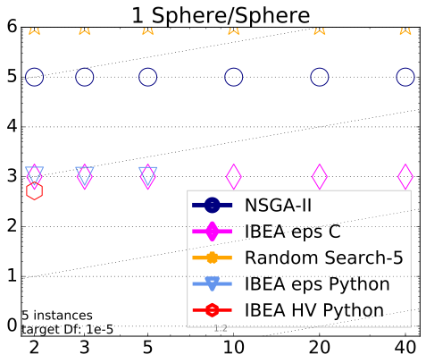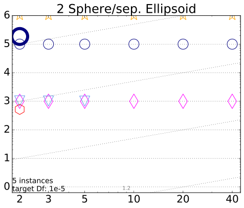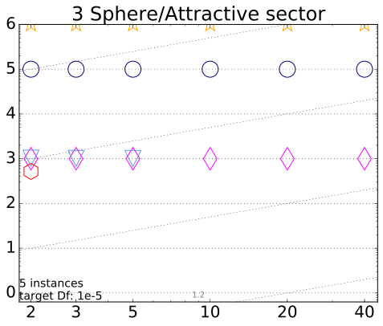 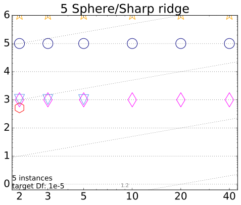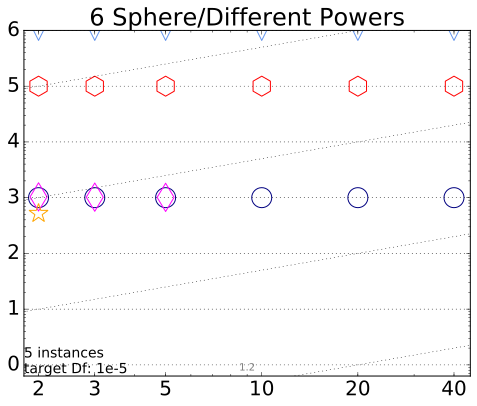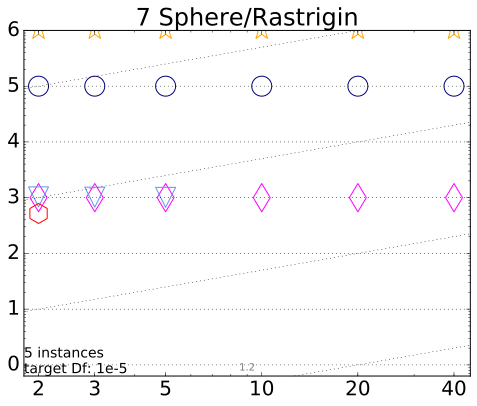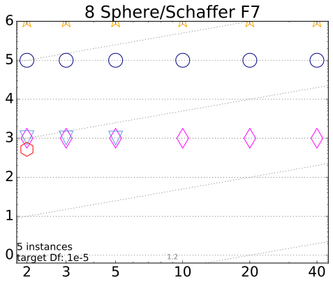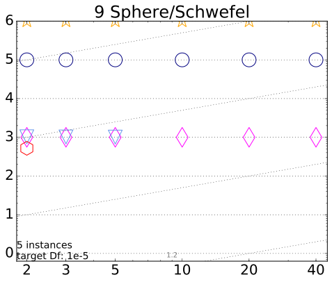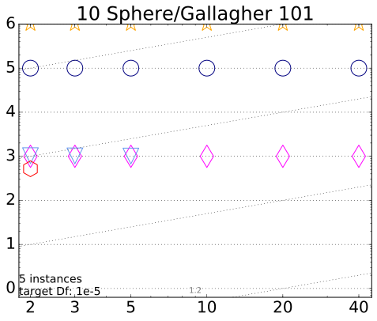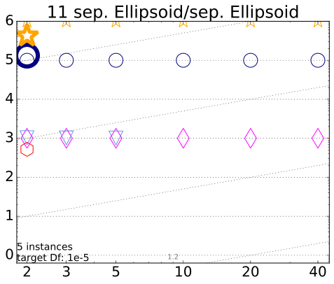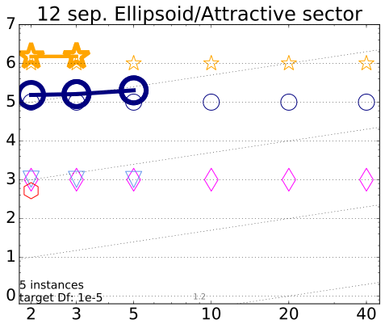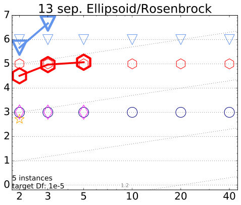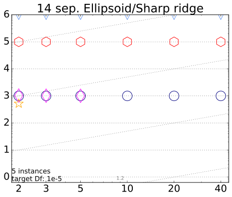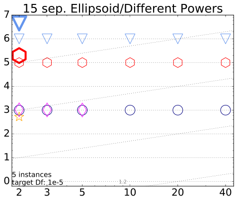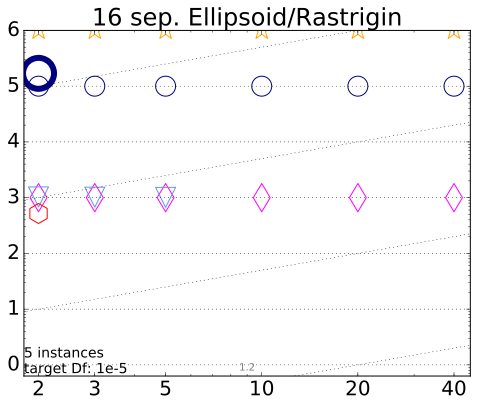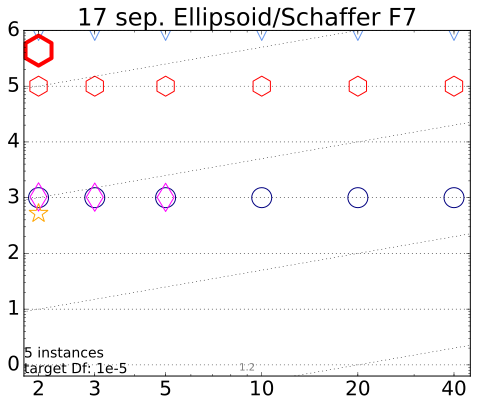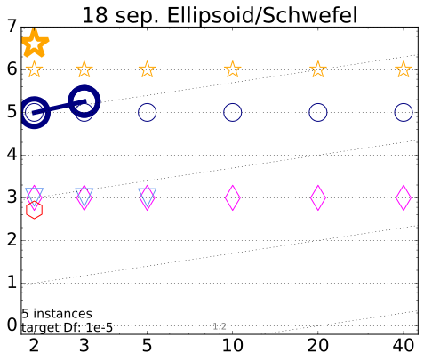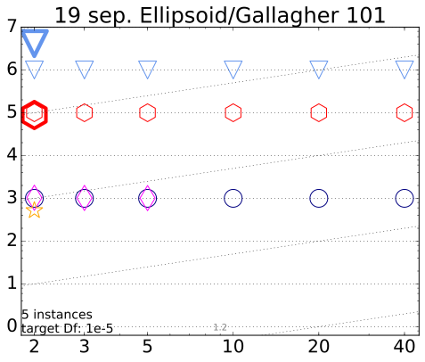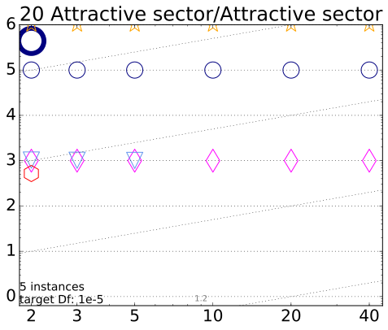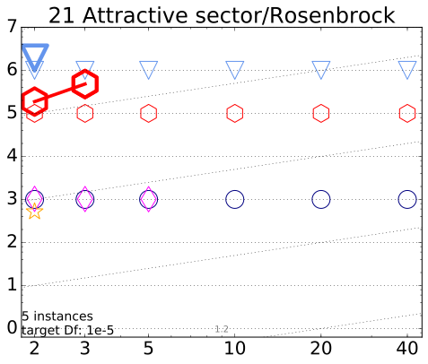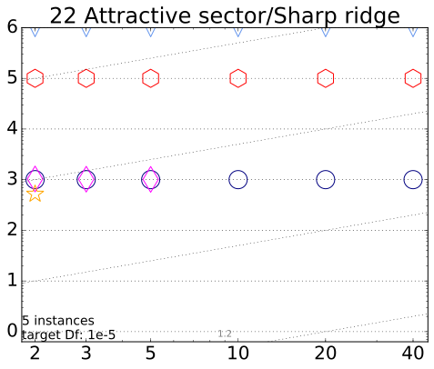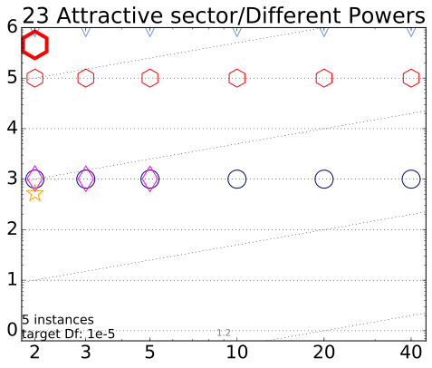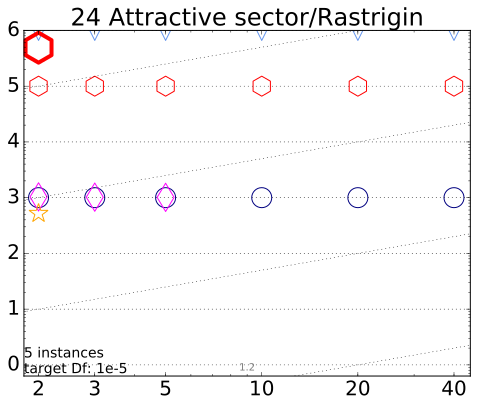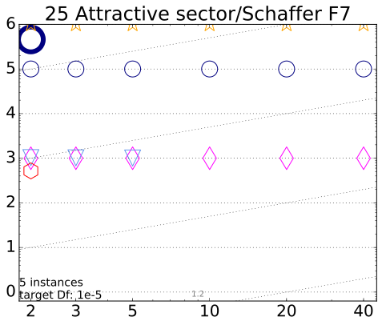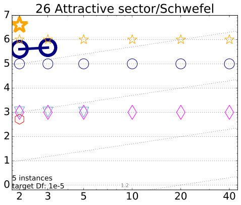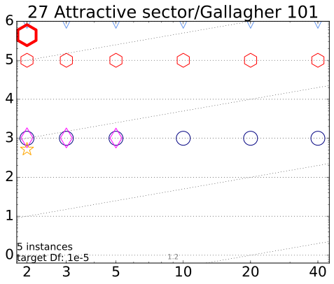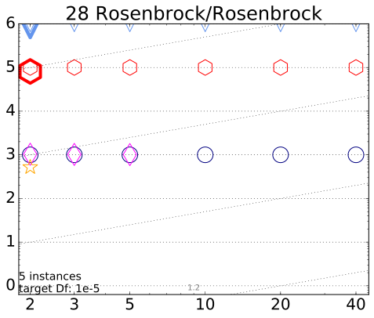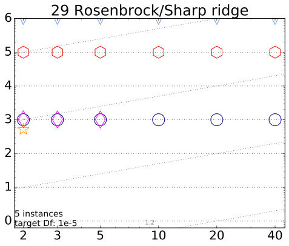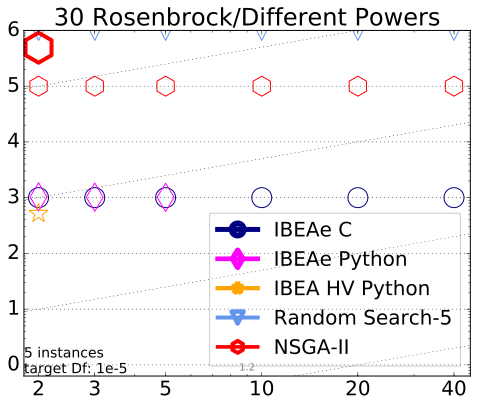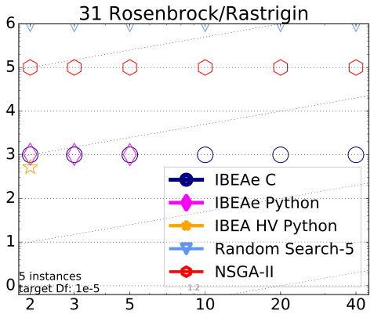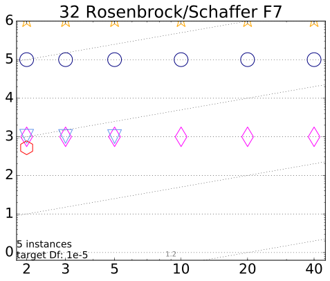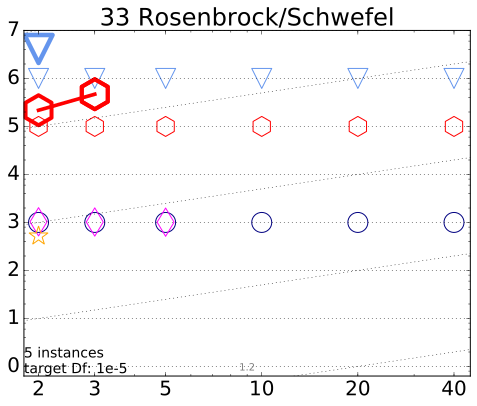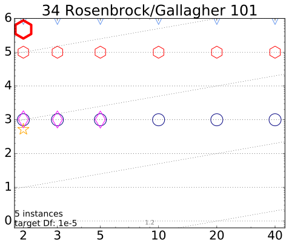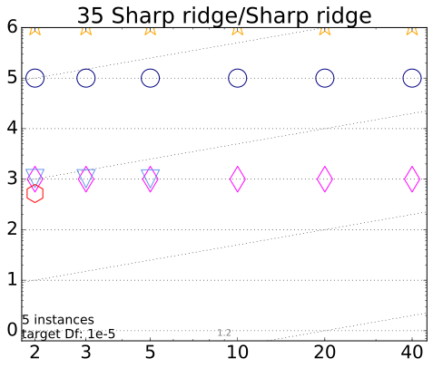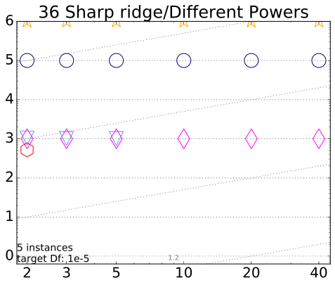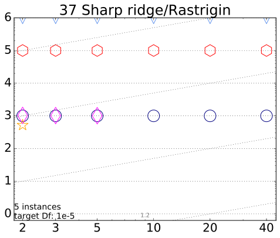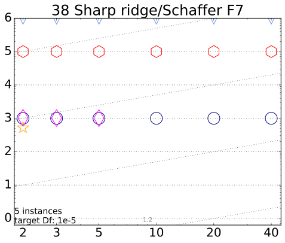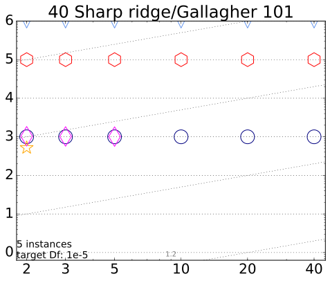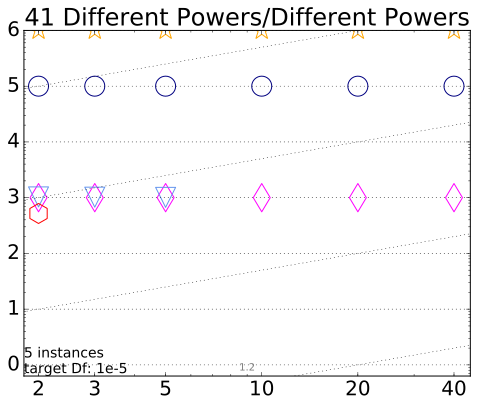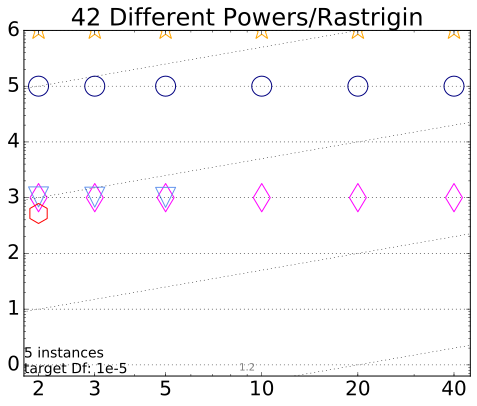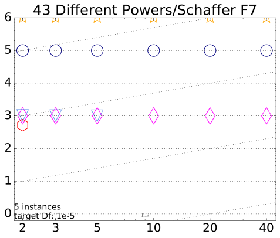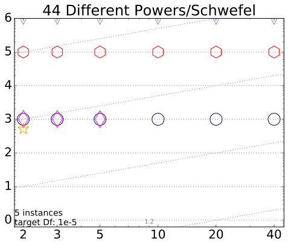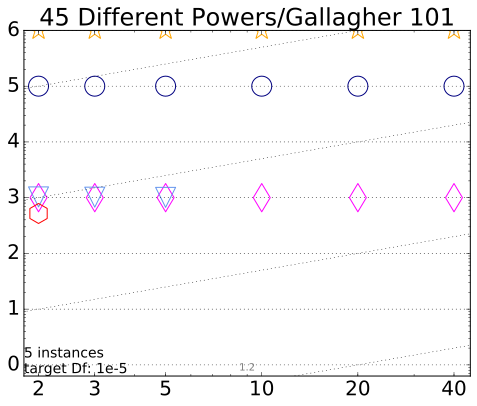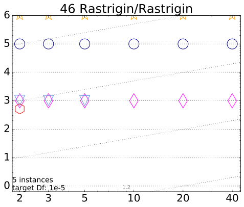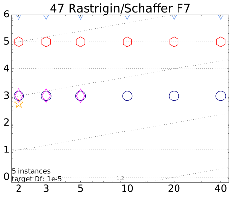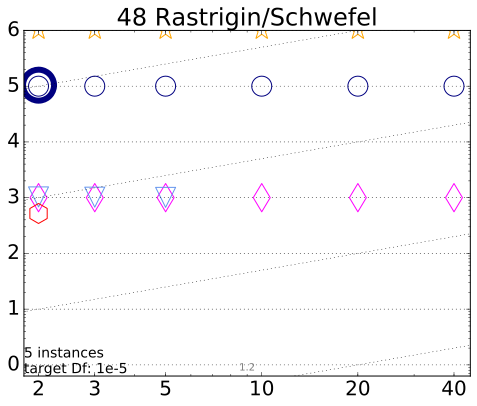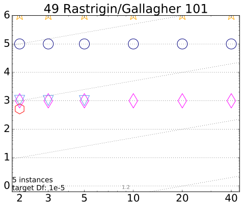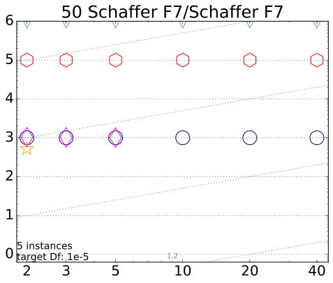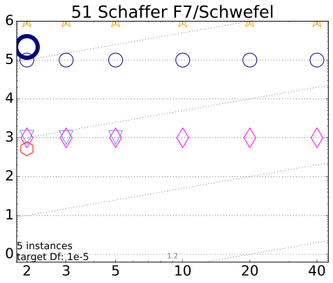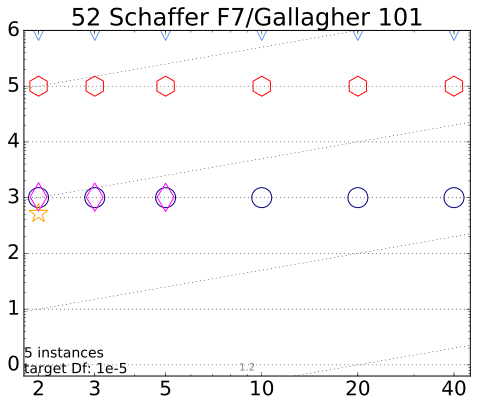
Average running time (aRT in number of f-evaluations as log10 value), divided by dimension for target function value 10^{-5} versus dimension. Slanted grid lines indicate quadratic scaling with the dimension. Different symbols correspond to different algorithms given in the legend of f1 and f55. Light symbols give the maximum number of function evaluations from the longest trial divided by dimension. Black stars indicate a statistically better result compared to all other algorithms with p < 0.01 and Bonferroni correction number of dimensions (six). Legend: ○: IBEAe C, ♢: IBEAe Python, ☆: IBEA HV Python, ▽: Random Search-5, varhexagon: NSGA-II

Average running time (aRT in number of f-evaluations as log10 value), divided by dimension for target function value 10^{-5} versus dimension. Slanted grid lines indicate quadratic scaling with the dimension. Different symbols correspond to different algorithms given in the legend of f1 and f55. Light symbols give the maximum number of function evaluations from the longest trial divided by dimension. Black stars indicate a statistically better result compared to all other algorithms with p < 0.01 and Bonferroni correction number of dimensions (six). Legend: ○: IBEAe C, ♢: IBEAe Python, ☆: IBEA HV Python, ▽: Random Search-5, varhexagon: NSGA-II